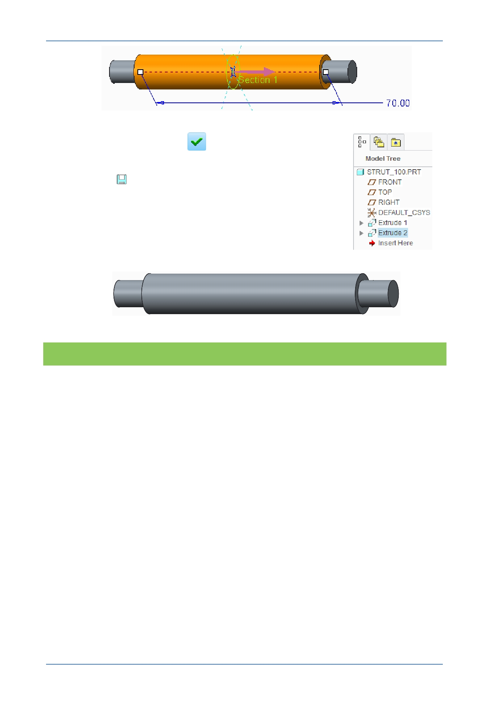

PTC Academic Program
Click Complete Feature
.
9. Click Save
to save your work.
What have you learned?
Datum display – visibility.
Viewing the model – default and spin.
Extrude - sketch based feature, extrude on both sides.
Sketch geometry – circle and change dimension.
Dashboard interface.
Saving the current model.
© 2012 PTC
Creo Parametric 2.0 Primer
Page 53